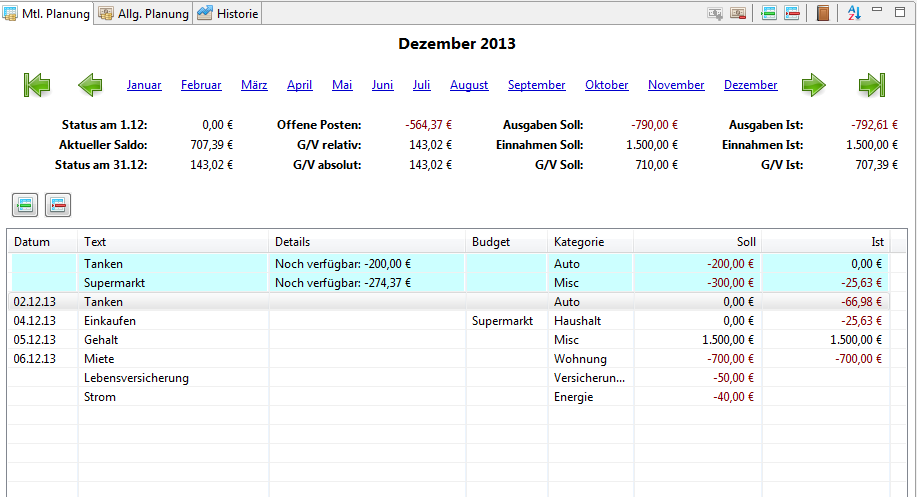

Benutzerhandbuch >
Ausgaben kontrollieren
Sobald Sie Ihren Allgemeinen Plan erstellt haben, können Sie Ihre
monatlichen Einnahmen und Ausgaben nachverfolgen und kontrollieren. Von nun an werden Sie hauptsächlich diese
Aufgaben innerhalb RsBudget durchführen: neue Buchungen eingeben, Planwerte verändern und finanzielle Aktivitäten
kontrollieren.
Sie können eine Buchung oder ein Budget jederzeit verändern, ohne andere Monate oder den Allgemeinen Plan
zu beeinflussen. Die Änderungen wirken sich nur lokal auf den jeweiligen Monat aus. Dieser Artikel erklärt, wie
Sie Ihre Einnahmen und Ausgaben nachverfolgen.

Eine vollständige Beschreibung der Ansicht findet sich hier.
Den Monatsplan erzeugen
Navigieren Sie zunächst zu dem gewünschten Monat (der aktuelle Monat ist automatisch ausgewählt, wenn
Sie RsBudget starten). Erzeugen Sie den Monatsplan, indem Sie auf die Schaltfläche
 in der Werkzeugleiste klicken. Das System wertet nun den
Allgemeinen Plan aus und erzeugt alle Buchungen und Budgets, die für
diesen Monat geplant wurden. Die Übersicht zeigt Ihnen
sodann die Basisdaten Ihrer Planung an, sofern die Buchungen wie geplant erfolgen.
in der Werkzeugleiste klicken. Das System wertet nun den
Allgemeinen Plan aus und erzeugt alle Buchungen und Budgets, die für
diesen Monat geplant wurden. Die Übersicht zeigt Ihnen
sodann die Basisdaten Ihrer Planung an, sofern die Buchungen wie geplant erfolgen.
Den Monat eröffnen
Der nächste Schritt ist, RsBudget mitzuteilen, wie der Eröffnungssaldo ausfällt. Dieser
Wert ist individuell für jeden Monat definiert. Das heißt auch, dass dieser nicht zwangsläufig
mit dem Schluss-Saldo des Vormonats übereinstimmen muss. Sinnvollerweise sollten aber beide gleich sein.
Der Eröffnungs-Saldo ist der Wert, der in der Historie angezeigt wird.
Sie setzen den Saldo durch Klicken auf die Schaltfläche  in der
Werkzeugleiste der Ansicht. Der erscheinende Dialog prüft alle möglichen Optionen und schlägt einige
der Optionen vor. Wählen Sie einen Wert aus, oder geben Sie den Wert manuell ein. Achten Sie bitte darauf,
dass Sie den Wert auf der linken Seite des Dialogs festlegen. Die rechte Seite ist für den Schluss-Saldo
reserviert.
in der
Werkzeugleiste der Ansicht. Der erscheinende Dialog prüft alle möglichen Optionen und schlägt einige
der Optionen vor. Wählen Sie einen Wert aus, oder geben Sie den Wert manuell ein. Achten Sie bitte darauf,
dass Sie den Wert auf der linken Seite des Dialogs festlegen. Die rechte Seite ist für den Schluss-Saldo
reserviert.
Einnahmen und Ausgaben kontrollieren
Sie können nun Ihre Einnahmen und Ausgaben nachverfolgen. Erzeugen Sie dazu Einzel-Buchungen oder Budgets,
geben Sie die Ist-Werte von geplanten Buchungen und deren Buchungsdatum ein. Das System wird die Änderungen
mit einer aktualisierten Gewinn- und Verlustrechnung in der Übersicht quittieren. Weitere Details zu den
möglichen Aktionen, die Sie auf dem Monatsplan durchführen können, entnehmen Sie bitte der
entsprechenden Hilfeseite.
Es ist im Übrigen möglich, die Zuweisung von Budgets und Kategorien zu vereinfachen, in dem man
entsprechende Regeln definiert. Einzelheiten dazu entnehmen Sie bitte der Hilfe zum
Einstellungs-Dialog.
Den Monat abschließen
Nachdem die letzte Buchung für einen Monat eingetragen wurde, muss der Monat noch finanziell abgeschlossen werden.
Der letzte Schritt ist daher, den Schluss-Saldo festzulegen. Dieser Wert definiert zusammen mit dem Eröffnungs-Saldo
den Gewinn/Verlust für den jeweiligen Monat. Er wird separat gespeichert, so dass keine Notwendigkeit besteht,
dass er logisch zu den Transaktionen passt (er kann vom eigentlichen Saldo abweichen). Natürlich ist es sinnvoller,
einen der Vorschläge von RsBudget anzunehmen, wenn man den Schluss-Saldo festlegt. Klicken Sie erneut auf die
Schaltfläche und setzen Sie den Wert auf der rechten Seite des Dialogs.
Geschafft! Sie haben Ihre Finanzen erfolgreich für diesen Monat verfolgt und kontrolliert. Nun ist es Zeit, von vorne
anzufangen: mit dem nächsten Monat.
{kind=link}